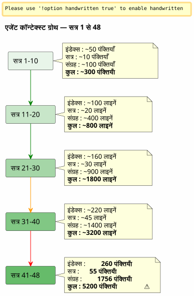

स्लाइडिंग विंडो और कोल्ड वेव: जब एजेंट कॉन्टेक्स्ट बढ़ जाता है और बिना डेटा खोए आर्काइव करना आवश्यक होता है
प्रकाशित: 26 April 2026
सारांश
48 sessions पर एक ही प्रोजेक्ट पर और कुल 150+ तक, ईगर/लैज़ी गवर्नेंस सिस्टम जिसे मैंने सावधानीपूर्वक बनाया था, दम घुटने लगा। एजेंट फाइलें, जिन्हें हल्का होना चाहिए था, संचय में 5200 पंक्तियों का वजन रखती थीं। स्वतः लोड किया गया संदर्भ मेरी नियंत्रण क्षमता से तेज़ी से बढ़ रहा था। यह लेख बताता है कि मैंने बैकअप तंत्र की कल्पना कैसे की — स्लाइडिंग विंडो और समान ठंडी लहर के बीच — ताकि एक सक्रिय हल्का संदर्भ बनाए रखा जा सके बिना कभी भी कुछ भी खोए बिना।
सिग्नल : 5200 लाइनें
मैं सत्र 048 के बीच में हूँ`magic-stick`, मेरे लाइव लिनक्स ISO बिल्ड का प्रोजेक्ट। Opencode मुझे देख रहा है। हमेशा की तरह, इसने मेरे Eager फाइलों को सत्र की शुरुआत में स्वचालित रूप से लोड किया —AGENT.adoc, PROMPT_REPRISE.adoc, .agents/INDEX.adoc. कुछ असामान्य नहीं।
बस कि कुछ बात सही नहीं है। जवाब धीमे हो गए हैं। तर्क कमज़ोर हो गया है। एजेंट उन विवरणों को भूल जाता है जो उसके सामने दो संदेश पहले थे।
मैं एक टर्मिनल खोलता हूँ और टाइप करता हूँ:
wc -l .agents/INDEX.adoc .agents/SESSIONS_HISTORY.adoc \
.agents/archives/COMPLETED_TASKS_ARCHIVE_2026-04.adoc260 पंक्तियों के लिए INDEX. 55 पंक्तियों के लिए SESSIONS_HISTORY.COMPLETED_TASKS_ARCHIVE के लिए 1756.
फ़ाइल`sessions/`अभी भी जोड़ता है ~3200 लाइनें. कुल :5200 लाइनेंजो संदर्भ लोड होते हैं, किसी भी तरह से, एजेंट के अस्थायी मस्तिष्क में।
ईगर/लेसी रणनीति जो मैंने पिछले लेख में सिद्धांतित की थी, काम करती है — लेकिन इसका एक जन्मजात दोष है जिसकी मैंने पहले से कल्पना नहीं की थी: उसके पास नहींकोई उम्र बढ़ने का तंत्र नहीं. प्रत्येक सत्र INDEX में एक पंक्ति जोड़ता है, COMPLETED_TASKS में एक पैराग्राफ, sessions/ में एक फ़ाइल। कुछ भी बाहर नहीं निकलता। संदर्भ हर नए सत्र के साथ बढ़ता बर्फ़ का गोला है।

यह एक बग नहीं है, यह सत्र समाप्ति प्रक्रिया का सीधा परिणाम है जो हर विवरण को सावधानीपूर्वक संग्रहीत करता है। सिस्टम अपनी सफलता का शिकार है।
निदान : त्रिगुणित अतिरेक
मैं एजेंट से समस्या का निदान करने के लिए कहता हूँ। उसका उत्तर तत्काल और सटीक है।
फ़ाइल |
पंक्तियाँ |
भूमिका |
समस्या |
|
260+ |
EAGER (स्वचालित रूप से चार्ज) |
001 से सभी सत्रों की तालिका —+1 लाइन प्रति सत्र |
|
55 |
उत्सुक |
सारांश तालिका —INDEX के साथ रीडन्डेंसी |
|
1756 |
इच्छुक (अंतर्निहित) |
अप्रैल के सभी सत्रों के पूर्ण विवरण |
|
~5200 total |
LAZY (कथित) |
व्यक्तिगत अभिलेखागार, लेकिनउपयोग नहीं किया गयाक्योंकि सब कुछ पहले से ही COMPLETED_TASKS में |
एजेंट चार मूल कारणों की पहचान करता है:
-
COMPLETED_TASKS_ARCHIVE सब कुछ सोख लेता है— इसके बजाय अभिलेखों की ओर इशारा करना`.sessions/`, वह प्रत्येक सत्र की पूरी प्रतिलिपि बनाता है।
-
INDEX.adoc एक पूर्ण इतिहास का काम करता है— तालिका "हाल की सत्रें" 30+ प्रविष्टियाँ शामिल है।
-
SESSIONS_HISTORY.adoc अधिप्रचुरसूचना समान है INDEX के समान, प्रारूप अलग है।
-
LAZY नियम का पालन नहीं किया गया— COMPLETED_TASKS अनोखे ढंग से EAGER है क्योंकि इसमें सब कुछ है।
उसका प्रस्ताव मौलिक है: INDEX को 10 सत्रों तक सीमित करना, COMPLETED_TASKS को खाली करना, SESSIONS_HISTORY को शुद्ध LAZY में ले जाना. तात्कालिक लाभ:~1900 लाइनें बचाई गईं.
यह साफ़, प्रभावशाली, तर्कसंगत है। लेकिन मुझे इस दृष्टिकोण के साथ एक समस्या है।
मैं स्पष्ट समाधान को क्यों अस्वीकार कर दिया?
एजेंट का समाधान एक इंजीनियर की तरह है जो एक कैश को अनुकूलित करता है। सीमित। काटें। अतिरेक को हटाएँ।
लेकिन ये 'रिडंडेंसियाँ' नहीं हैं। प्रत्येक शासन फ़ाइल एकअलग कोणएक ही वास्तविकता पर :
-
सूची= मैक्रो दृश्य, कार्यकारी डैशबोर्ड
-
SESSIONS_HISTORY= अनुक्रमिक रैखिक तालिका, स्कोर की गई
-
COMPLETED_TASKS_ARCHIVE= विस्तृत वर्णन मेट्रिक्स के साथ
-
sessions/*.adoc = व्यक्तिगत रिकॉर्ड, पूर्ण संदर्भ
यह मूर्खतापूर्ण डुप्लिकेशन नहीं है। यह कीबहुमुखी संरचित दृष्टिकोण. यह ठीक वही है जिसकी हमें डिस्टिल करने की आवश्यकता है — ताकि बाद में, एक मनुष्य (या एक बेहतर प्रशिक्षित भविष्य का LLM) कोणों को पार कर सके और पैटर्न निकाल सके।
कल्पना कीजिए एक डेटा साइंटिस्ट जो आपको कहता है : « आइए 6 में से 3 कॉलम हटा दें, वे सहसंबद्ध हैं। » आप उसे क्या जवाब देंगे? सहसंबंध तभी अतिरेक नहीं होता, जब प्रत्येक कॉलम एक ही घटना के अलग-अलग आयाम को पकड़ती है। ठीक इसी आयामी समृद्धि के कारण डेटासेट उपयोगी बनता है।
यह मेरा अंतर्ज्ञान है। और मैं इसे एजेंट की ठंडी तर्कसंगतता के खिलाफ़ बचाव करता हूँ।
_ मुझे अपने विचार में शांत 'सब कुछ रखने वाला' बैग नहीं दिखता। हम सब कुछ नहीं ठूँसते, हम सत्र समाप्ति प्रक्रिया का संरचित परिणाम ले जाते हैं — प्रत्येक फ़ाइल अपने कोण के साथ, अपने अतिरेक के साथ, जो वास्तव में एक समृद्धि है। यह बहुआयामी सामग्री ही distillation के लिए बेहतर होगी। _
एजेंट को चोट लगती है। और वह खुद को सुधारता है।
प्रस्ताव: समान ठंडी लहर
एजेंट फिर एक अधिक सूक्ष्म तंत्र प्रस्तावित करता है, जो मेरे समृद्ध डेटासेट के अन्तर्बोध का सम्मान करता है, साथ ही तकनीकी समस्या को हल करता है जहाँ संदर्भ विस्फोट हो रहा है।
सिद्धांत सरल है और यह पैटर्न से सीधे प्रेरित हैगरम/उष्ण/ठंडा भंडारणसंग्रह प्रबंधन में लागू :
-
गरम (उत्सुक)= पिछले 10 सत्र INDEX में, सत्र N+1 का PROMPT_REPRISE, पिछले 2 सत्र फ़ाइलें
-
गरम (LAZY)= SESSIONS_HISTORY हाल का, SCRIPT_VERIFICATION, सभी संदर्भ दस्तावेज़
-
ठंडा (backup/)= सभी बाकी, स्थानांतरितअक्षत, बिना परिवर्तन के, बिना पुनः अनुक्रमण के
----
----
----
----
.agents/
├── INDEX.adoc → Sessions N-9 à N (10 dernières)
├── SESSIONS_HISTORY.adoc → Sessions N-9 à N
├── SCRIPT_VERIFICATION.adoc → Dernière vérif (pas d'historique)
├── PROMPT_REPRISE.adoc → Session N+1 uniquement
├── sessions/ → Sessions N-1 à N uniquement
└── backup/
└── Y2026-sessions-001-039/ ← Vague froide, COPIE INTÉGRALE
├── INDEX.adoc → Sessions 001 à 039 (complet)
├── SESSIONS_HISTORY.adoc → Sessions 001 à 039 (complet)
├── COMPLETED_TASKS_ARCHIVE.adoc → Sessions 001 à 039 (complet)
└── sessions/ → 001.adoc, 002.adoc...
----
यंत्र की चाबी :**बैकअप एक केंद्रीय सूचकांक नहीं है, यह पिछली लहर की सटीक प्रतिलिपि है।**. जब हम 10 सक्रिय सत्रों के क्षितिज को पार करते हैं, तो हम कुछ भी नहीं हटाते। हम कुछ भी पुनः अनुक्रमित नहीं करते। हम कुछ भी मर्ज नहीं करते। हम सत्र N-10 के जैसा एजेंट फ़ाइलों का पैकेज लेते हैं, और इसे ले जाते हैं`backup/`.
सक्रिय फ़ाइलें, वे, ट्रंकेट हैं :
* INDEX : केवल अंतिम 10 पंक्तियाँ (स्लाइडिंग विंडो)
* SESSIONS_HISTORY : वही
* COMPLETED_TASKS_ARCHIVE : वर्तमान अवधि के लिए नई फ़ाइल
* sessions/ : केवल 2 पिछले सत्र
[plantuml, format=svg, id=diag-hot-warm-cold, alt="Architecture Hot/Warm/Cold du contexte agent — EAGER/LAZY/backup"]
----
@startuml
skinparam backgroundColor #FEFEFE
skinparam defaultTextAlignment center
skinparam wrapWidth 200
title Architecture Hot / Warm / Cold का संदर्भ एजेंट
package "HOT (EAGER)\nस्वचालित रूप से चार्ज किया गया\n~300 लाइनों" as HOT #FFCDD2 {
file "INDEX.adoc\n(10 सत्र)" as IDX_HOT
file "PROMPT_REPRISE\nसत्र N+1" as PRO_HOT
file "AGENT.adoc\n(अटल नियम)" as AG_HOT
}
package "WARM (LAZY)\nमांग पर लोड\n~500 लाइनें" as WARM #FFF9C4 {
file "SESSIONS_HISTORY\n(10 पिछले)" as HIS_WARM
file "SCRIPT_VERIFICATION\n(अंतिम)" as VER_WARM
file "PROCEDURES.adoc\n(टेम्पलेट)" as PRO_WARM
file "*_REFERENCE.adoc\n(तकनीकी दस्तावेज़)" as REF_WARM
}
package "COLD (backup/)\nकभी चार्ज नहीं\nकेवल मानव पढ़ें" as COLD #BBDEFB {
folder "Y2026-001-039/" as WAVE {
file "सूची (पूर्ण)" as IDX_COLD
file "SESSIONS_HISTORY\n(पूर्ण)" as HIS_COLD
file "COMPLETED_TASKS\n(पूरा)" as ARCH_COLD
folder "सत्र/ (001-039)" as SESS_COLD
}
folder "Y2026-040-???\n(भविष्य)" as FUTURE
}
HOT --> WARM : "एजेंट बढ़ता\nयदि आवश्यक हो"
WARM --> COLD : "कभी स्वचालित नहीं\nइंसान अकेले ही जाता है"
note bottom of COLD
Règle : COPIE INTÉGRALE
Pas de transformation
Pas de réindexation
Read-only après archivage
end note
@enduml
----
तत्काल लाभ भारी है: EAGER संदर्भ से गुजरता है**~5200 लाइनों से ~300 लाइनों तक**. एक 17 से विभाजन। कोई भी ऐतिहासिक डेटा की एक ही पंक्ति नहीं खोई।
== क्यों यह एक सब कुछ रखने वाला नहीं है
एजेंट, अपनी पहली इटरेशन में, डर रहा था कि`backup/`एक काली बॉक्स बन जाए — एक फ़ोल्डर जहाँ हम फाइलें फेंकते हैं जिन्हें हम कभी नहीं पढ़ेंगे। यह एक वैध डर है। लेकिन यह एक गलतफ़हमी पर आधारित है।
एक सब कुछ रखने वाला डिब्बा तब होता है जब हम फाइलें फेंकते हैं**कोई संरचना नहीं, कोई परंपरा नहीं, समूहीकरण की कोई तर्क नहीं**. यहाँ, बैकअप अवधि के अनुसार संरचित है (Y2026-001-039), और हर बैकअप फ़ोल्डर शामिल करता है**एक ही संरचना**कि फ़ाइल`.agents/`सक्रिय: INDEX, SESSIONS_HISTORY, COMPLETED_TASKS_ARCHIVE, sessions/.
यह एक विविध संग्रह नहीं है। यह एक**टाइमस्टैम्प्ड स्नैपशॉट**. इस बात को तो यह भी कहा जा सकता है कि यह एक सरलीकृत वर्ज़निंग तंत्र है — सिर्फ़ यह फर्क है कि यह फ़ाइलों को व्यक्तिगत रूप से वर्ज़न नहीं करता, बल्कि एक समय T पर शासन के पूर्ण पैकेज को वर्ज़न करता है।
जब आप पुरानी जानकारी ढूंढना चाहते हैं, तो आपको केंद्रीय सूचकांक की आवश्यकता नहीं होती। आपके पास दो विकल्प हैं :
1. **grep` लक्षित**(Empty output)`grep -r "zsh" backup/Y2026-001-039/`— और आप वह सब पाते हैं जो अवधि में zsh का उल्लेख करता है, चाहे कोण कुछ भी हो (INDEX, SESSIONS_HISTORY, सत्र अभिलेख).
2. **हस्तचालित पुनर्स्थापना**: आप बैकअप फ़ोल्डर को अस्थायी रूप से सक्रिय संदर्भ में कॉपी करते हैं, और आप एजेंट से इस विशिष्ट अवधि का विश्लेषण करने के लिए कहते हैं।
इंडेक्स अंतर्निहित है। इसे फ़ाइलों की संरचना में ही पाया जाता है — प्रत्येक फ़ाइल अपने स्वयं के दृष्टिकोण से पहले से ही एक इंडेक्स है।
== शेल्फ़ों की उपमा
मैकेनिज्म को सहज बनाने के लिए, मैंने इसे तीन शेल्फ़ के रूप में अवधारणित किया:
* **शेल्फ 1 (EAGER)**— कार्य योजना. जो मुझे *अभी* चाहिए। हाल का सूचकांक, तत्काल पुनरारंभ, अपरिवर्तनीय नियम। हल्का, तात्कालिक, गंभीर।
* **शेल्फ 2 (LAZY)**— परामर्श पुस्तकालय। जो मैं मांग पर ला सकता हूँ। तकनीकी संदर्भ, हाल का इतिहास, प्रक्रियाएँ। अधिक आकार का, लेकिन मेमोरी में लोड नहीं।
* **गुहा (बैकअप/)**— ठंडे अभिलेख। जो कुछ भी गुज़रा हुआ है लेकिन जिसे मैं फेंकना नहीं चाहता। एजेंट कभी वहाँ नहीं जाता। मनुष्य तब नीचे जाता है जब वह सार निकालना चाहता है।
एजेंट ने शुरू में एक चौथी शेल्फ़ की पेशकश की — एक`index-backup.adoc`जो LAZY होता और बैकअप की पूरी सामग्री की सामग्री सूची रखता। मैंने मना कर दिया। यह एक सिस्टम में एक अतिरिक्त रिडंडेंसी होगी जो पहले से ही रैखिक वृद्धि से पीड़ित है। आर्काइव्ड फाइलों की संरचना पहले से ही एक सूचकांक है।
== दो ट्रिगर सेंसर
अवधारणा मजबूत थी, लेकिन एक अंधा बिंदु बचा था:**कब ठीक-ठीक घूर्णन शुरू करना चाहिए?**प्रारंभिक लेख ने इसे एक खुला प्रश्न पहचाना। दो दिनों बाद, उत्तर को छह परियोजनाओं के शासन फ़ाइलों में कोडित किया गया: दो ट्रिगर वाला सेंसर।
=== स्वचालित ट्रिगर — `N % 10 == 0
पहला ट्रिगर गणितीय है। जब सत्र संख्या 10 का गुणक हो — सत्र 10, 20, 30, 40 — बैकअप रोटेशन स्वचालित रूप से सत्र समाप्ति प्रक्रिया के भीतर चलती है, चरण 6 के ठीक बाद।
10 क्यों? यह दो विपरीत बलों के बीच का समझौता है: एक बहुत छोटी खिड़की (5 सत्र) निरंतरता के लिए आवश्यक संदर्भ खो देती है; एक बहुत लंबी खिड़की (20 सत्र) संदर्भ की अतिभार समस्या को हल नहीं करती। दस सत्र, एक दिन में एक से दो सत्र की गति से, लगभग एक कार्य सप्ताह को कवर करते हैं — एजेंट को हाल के निर्णयों को याद रखने के लिए पर्याप्त, लेकिन संदर्भ को फटने के लिए पर्याप्त नहीं।
=== सीमा ट्रिगर — 500 लाइनें EAGER
दूसरा ट्रिगर डायनामिक है। सत्र संख्या की परवाह किए बिना, यदि संचित EAGER फ़ाइलें से अधिक हैं**500 पंक्तियाँ**, घूर्णन शुरू हो जाता है।
यह सीमा उस स्थिति के खिलाफ सुरक्षा प्रदान करती है जहाँ सत्र असाधारण रूप से उत्पादक होते हैं — कम सत्रों में बहुत अधिक सामग्री लिखी जाती है। जो सत्र 120 लाइनों का संपादकीय सामग्री उत्पन्न करता है, वह COMPLETED_TASKS_ARCHIVE को एक डिबग सत्र की तुलना में बहुत तेज़ी से बढ़ाता है जो केवल दो लाइनों को ठीक करता है। 500 लाइनों का यह सीमा, मापा गया via`wc -l .agents/INDEX.adoc .agents/archives/COMPLETED_TASKS_ARCHIVE_*.adoc PROMPT_REPRISE.adoc`, यह असममिति को पकड़ता है।
=== मैनुअल ट्रिगर — "रोटेशन बैकअप
अंत में, मनुष्य नियंत्रण में रहता है। कीवर्ड्स`rotation backup`, `backup rotation` ou `lance la rotation backup`वे मांग पर प्रक्रिया को ट्रिगर करते हैं, सत्र के अंत से स्वतंत्र रूप से। यह उपयोगी होता है जब हमें महसूस होता है कि संदर्भ भारी हो रहा है लेकिन हम अभी 10 का गुणज नहीं हैं, या जब हम एक नई शुरू करने से पहले किसी काम के चरण को संग्रहीत करना चाहते हैं।
[plantuml, format=svg, id=diag-capteur-trigger, alt="Les trois déclencheurs du capteur de rotation backup — automatique, seuil, manuel"]
----
@startuml
skinparam backgroundColor #FEFEFE
skinparam defaultTextAlignment center
skinparam wrapWidth 200
title रोटेशन बैकअप सेंसर — तीन ट्रिगर
start
:Procédure de fin de session;
note right: Mots-clés "सत्र का अंत"\nou "इसी पर रोक लगा देते हैं"
:Étapes 1 à 6\n(archivage standard);
note right
1. Archive sessions/N.adoc
2. MAJ PROMPT_REPRISE
3. MAJ SESSIONS_HISTORY
4. MAJ INDEX.adoc
5. MAJ TEST_COVERAGE
6. MAJ COMPLETED_TASKS
end note
if (N % 10 == 0\nOU\nEAGER cumulé > 500 lignes ?) then (oui)
:⚙️ Rotation Backup\n(étape 7);
note right
1. Créer backup/Y20XX-sessions-X-Y/
2. Copier intégrale INDEX + HISTORY
+ COMPLETED_TASKS + sessions/
3. Tronquer actifs à 10 sessions
4. Ajouter _Localisation active_
end note
else (non)
:Pas de rotation;
endif
:Checklist [✅] x 7\n(si applicable);
stop
@enduml
----
यह आरेख सत्र समाप्ति प्रक्रिया में सेंसर के सटीक प्रवेश को दर्शाता है। चरण 7 वैकल्पिक है — यह केवल तभी चलाया जाता है जब दो शर्तों में से कोई एक सत्य हो — लेकिन इसे व्यवस्थित रूप से *सत्यापित* किया जाता है। अंतिम चेकलिस्ट में शामिल है`[✅] 7. Backup roté (si applicable)`.
=== बंद लूप
यह सेंसर पिछले लेख द्वारा खोली गई लूप को बंद कर देता है। इच्छुक/आलसी गवर्नेंस ने दो सत्रों के बीच एजेंट स्मृति की समस्या को हल कर दिया था। हॉट/वार्म/कोल्ड तंत्र ने बढ़ती मेमोरी की समस्या को हल कर दिया। दो ट्रिगर वाला सेंसर *quand* की समस्या को हल करता है — मानव को संदर्भ के आकार की निगरानी करने का मानसिक बोझ हटाता है।
[plantuml, format=svg, id=diag-boucle-fermee, alt="Les trois couches de la gouvernance agent — Eager/Lazy, Hot/Warm/Cold, Capteur"]
----
@startuml
skinparam backgroundColor #FEFEFE
skinparam defaultTextAlignment center
title एजेंट प्रशासन की तीन परतें
left to right direction
package "परत 1 — स्मृति\n(अनुच्छेद 0108)" as C1 #E8F5E9 {
rectangle "**EAGER**\nडैशबोर्ड\nऑटो चार्ज" as EAG
rectangle "**LAZY**\nमालिक मैनुअल\nमांग पर लोड" as LAZ
EAG -[hidden]right-> LAZ
}
package "परत 2 — बुढ़ापा\n(अनुच्छेद 0110)" as C2 #FFF9C4 {
rectangle "**HOT**\n10 सक्रिय सत्र\n~300 लाइनें" as HOT
rectangle "**WARM**\nसंदर्भ\nप्रक्रियाएँ" as WRM
rectangle "**COLD**\nbackup/\nठंडी लहर" as CLD
HOT -[hidden]right-> WRM
WRM -[hidden]right-> CLD
}
package "लेयर 3 — ट्रिगर\n(आज)" as C3 #BBDEFB {
rectangle "**स्वचालित**\nN % 10 == 0" as AUTO
rectangle "**सीमा**\n> 500 पंक्तियां" as SEUIL
rectangle "मैनुएल\nरोटेशन बैकअप" as MAN
AUTO -[hidden]right-> SEUIL
SEUIL -[hidden]right-> MAN
}
C1 --> C2 : "मेमोरी बढ़ रही है\n→ एक तंत्र की आवश्यकता है\nवृद्धावस्था"
C2 --> C3 : "वृद्धावस्था\n→ एक ट्रिगर की आवश्यकता होती है\nइसे निष्पादित करने के लिए"
note bottom of C3
✅ Déployé sur 6 projets
magic-stick · bakery-gradle
plantuml-gradle · cheroliv.com
jhipster-gradle-plugins
quizz-benchmark-gradle
end note
@enduml
----
तीन परतें तार्किक रूप से ढेर होती हैं। पहला एजेंट को एक स्मृति प्रदान करता है। दूसरा इस स्मृति को एजेंट को दबाने से रोकता है। तीसरा इस स्मृति के रखरखाव को स्वचालित करता है ताकि इंसान को इसके बारे में सोचने की आवश्यकता न पड़े।
=== चेरोलिव डॉट कॉम पर प्रभावी माइग्रेशन
मैकेनिज्म सैद्धांतिक नहीं रहा। पर`cheroliv.com`, पहला बैकअप रोटेशन 29 अप्रैल 2026 को निष्पादित किया गया था — सत्र -6 से 2 तक की ओर स्थानांतरित हो गए हैं`.agents/backup/Y2026-sessions-neg6-a-002/` :
|===
|फ़ाइल |घूर्णन से पहले |घूर्णन के बाद |लाभ |`.agents/INDEX.adoc` |19 सत्र सूचीबद्ध |10 सत्र (3-12) |-9 प्रविष्टियाँ |`.agents/SESSIONS_HISTORY.adoc` |18 सत्र |10 सत्र |-8 एंट्री |`COMPLETED_TASKS_ARCHIVE` |161 लाइनें (सत्र 1-12) |135 लाइनों (सत्र 3-12) |-26 पंक्तियाँ |`sessions/` |20 फ़ाइलें |10 फ़ाइलें |-10 फ़ाइलें |**बैकअप/** |अस्तित्वहीन |1 ठंडी लहर (10 संग्रहीत सत्र) |+1 पैकेट ठंडा
|===
लाइनों में लाभ मामूली था — परियोजना युवा है, 12 सत्र — लेकिन महत्वपूर्ण बात यह है कि**मैकेनिज़्म स्थापित है**. अगली स्वचालित घूर्णन सत्र 20 पर ट्रिगर होगा, या यदि 500 ईगर लाइन्स पूरी हो जाती हैं तो उससे भी पहले।
== मानव-एजेंट का पाठ
इस सत्र 048 ने मुझे एआई एजेंट के साथ सहयोग के बारे में कुछ मूलभूत सीखा।
एजेंट के पास एक प्राकृतिक पक्षपात है: वह खोजने की कोशिश कर रहा है**अनुकूलित करना**, à **सरल बनाना**, à **दुहराव को समाप्त करें**. यह एक प्रशिक्षित प्रणाली का पूर्वाग्रह है जो साफ़ और संक्षिप्त प्रतिक्रिया उत्पन्न करने के लिए है। एक समृद्ध और बहुआयामी डेटासेट का सामना करते हुए, इसका पहला प्रतिक्रिया इसे अपने सबसे सरल रूप में घटाना है।
इंसान के पास एक अलग अंतर्दृष्टि है: वह महसूस करता है कि संरचित अतिरेक एक**फ़ायदा**, यह एक दोष नहीं। कि एक ही वास्तविकता के विभिन्न कोणों की विविधता ही ऐसा है जो बाद में गुणवत्तापूर्ण आसवन की अनुमति देगा।
यह नहीं कि एजेंट गलत है। दरअसल, उसका "optimum" मेरा नहीं है। एजेंट इसे के लिए अनुकूल बनाता है**वर्तमान**— तत्कालीन संदर्भ, पूछा गया प्रश्न का त्वरित उत्तर. मानव के लिए अनुकूलित करता**भविष्य**— पुनः प्राप्त, मिलाना और संक्षिप्त करना तीन महीनों या तीन वर्षों में.
____ मैं जो चाहता हूँ वह कच्चा माल है। तुम्हारे विचार, तुम्हारी संकोच, मेरे प्रश्नों के उत्तर। तुम्हारा संश्लेषण नहीं। संश्लेषण, मैं इसे तुमसे बेहतर ढंग से बना सकता हूँ। मैं कच्चा माल चाहता हूँ। ____
यह वाक्य जो मैंने उसे सत्र के अंत में कहा, सब कुछ संक्षेप में रखता है। एजेंट एक उत्पादन उपकरण है। मानव एक संकेंद्रण उपकरण है। शासन को ऐसा नहीं बनाया गया है कि एजेंट अकेले ही सब कुछ समझ जाए — यह इसलिए बनाया गया है कि मनुष्य बाद में उत्पादित सामग्री पर काम कर सके।
एक जैसी शीतल लहर इस दर्शन की वास्तुकल अनुवाद है: हम कुछ भी नहीं फेंकते, कुछ भी नहीं मिलाते, कुछ भी नहीं फिर से अनुक्रमित करते। हम अखंड पैकेज को ले जाते हैं। आसवन बाद में होगा, हाथ से, मानव द्वारा।
== पिछले लेख का तार्किक अनुक्रम
यदि आपने पढ़ा हैlink:/blog/2026/0108_gouvernance_agent_opencode_eager_lazy_post.html[Eager/Lazy रणनीति पर लेख], आप प्राकृतिक विकास को पहचानेंगे :
1. **लेख 0108**— इगर/लेसाइड गवर्नेंस *कैसे* एजेंट संदर्भ को दो उपलब्धता स्तरों में संरचित करें
2. **यह लेख 0110**— बैकअप तंत्र : *कैसे* इस संदर्भ को खोए बिना इसे पुराना करना जब यह बहुत बड़ा हो जाए
पहला लेख प्रश्न के उत्तर में था: « एजेंट दो सत्रों के बीच कुछ भी याद नहीं रखता, इसे स्मृति कैसे दी जाए?
यह पहले प्रश्न से अनिवार्य रूप से उत्पन्न होने वाले प्रश्न का उत्तर देता है: « स्मृति हर सत्र में बढ़ती है, उसे एजेंट को दबाने से रोकने का तरीका क्या है, बिना उसे मिटाए ?
जवाब एक पैटर्न में है :**गरम/सुनहरा/ठंडा**, शासन फ़ाइलों पर लागू। और एक सिद्धांत :**कभी कुछ भी न खोएँ, हमेशा सब कुछ पुनः स्थानांतरित करें**.
== लिंक
* पिछला लेख :link:/blog/2026/0108_gouvernance_agent_opencode_eager_lazy_post.html[AsciiDoc के साथ एक AI एजेंट का शासन]
* मेरा साइट : https://cheroliv.com
* परियोजना`magic-stick`: https://github.com/cheroliv/magic-stick
---
*एक अच्छी शासन प्रणाली कभी भी डेटा नहीं हटाती। वह उन्हें व्यवस्थित करती है।*
----
----
मेकैनिज़्म की चाबी:**बैकअप एक केंद्रीय सूचकांक नहीं है, यह पिछली लहर की एक सटीक प्रतिलिपि है।**. जब हम 10 सक्रिय सत्रों के क्षितिज को पार करते हैं, तो हम कुछ भी नहीं हटाते। हम कुछ भी पुन: अनुक्रमित नहीं करते। हम कुछ भी मर्ज नहीं करते। हम एजेंट फ़ाइलों के पैकेज को सत्र N-10 जैसा था वैसा ही लेते हैं, और हम इसे ले जाते हैं`backup/`.
सक्रिय फ़ाइलें, वे, कटे हुए हैं:
* INDEX : केवल अंतिम 10 पंक्तियाँ (स्लाइडिंग विंडो)
* SESSIONS_HISTORY : वही
* COMPLETED_TASKS_ARCHIVE : वर्तमान अवधि के लिए नई फ़ाइल
* sessions/ : केवल अंतिम 2 सत्र
[plantuml, format=svg, id=diag-hot-warm-cold, alt="Architecture Hot/Warm/Cold du contexte agent — EAGER/LAZY/backup"]
----
@startuml
skinparam backgroundColor #FEFEFE
skinparam defaultTextAlignment center
skinparam wrapWidth 200
title एजेंट कॉन्टेक्स्ट की हॉट / वार्म / कोल्ड आर्किटेक्चर
package "HOT (EAGER)\nस्वचालित रूप से लोड किया गया\n~300 पंक्तियाँ" as HOT #FFCDD2 {
file "INDEX.adoc\n(10 सत्र)" as IDX_HOT
file "प्रॉम्प्ट_पुनःआरंभ\n(सत्र N+1)" as PRO_HOT
file "AGENT.adoc\n(निरपेक्ष नियम)" as AG_HOT
}
package "वार्म (लेज़ी)\nमांग पर लोड किया गया\n~500 पंक्तियाँ" as WARM #FFF9C4 {
file "SESSIONS_HISTORY\n(अंतिम 10)" as HIS_WARM
file "SCRIPT_VERIFICATION\n(अंतिम)" as VER_WARM
file "PROCEDURES.adoc\n(टेम्पलेट्स)" as PRO_WARM
file "*_REFERENCE.adoc\n(तकनीकी दस्तावेज़)" as REF_WARM
}
package "कोल्ड (बैकअप/)\nकभी लोड नहीं किया गया\nकेवल मानव पठन" as COLD #BBDEFB {
folder "Y2026-001-039/" as WAVE {
file "अनुक्रमणिका (पूर्ण)" as IDX_COLD
file "SESSIONS_HISTORY\n(पूर्ण)" as HIS_COLD
file "COMPLETED_TASKS\n(पूर्ण)" as ARCH_COLD
folder "सत्र/ (001-039)" as SESS_COLD
}
folder "Y2026-040-???\n(भविष्य)" as FUTURE
}
HOT --> WARM : "एजेंट एस्केलेट करता है\nयदि आवश्यक हो"
WARM --> COLD : "कभी भी स्वचालित नहीं\nमनुष्य वहाँ अकेला जाता है"
note bottom of COLD
Règle : COPIE INTÉGRALE
Pas de transformation
Pas de réindexation
Read-only après archivage
end note
@enduml
----
तत्कालीन लाभ बहुत बड़ा है: ईगर संदर्भ से गुजरता है**~5200 पंक्तियों से ~300 पंक्तियों**. 17 से भाग. एक भी ऐतिहासिक डेटा की पंkti नहीं खोए बिना
== क्यों यह एक सर्वसाधारण नहीं है?
एजेंट, अपनी पहली इटरेशन में, डर रहा था कि`backup/`यह एक काली डिब्बा बन सकता है — एक फ़ोल्डर जहाँ हम फ़ाइलें डालते हैं जिन्हें हम कभी फिर से नहीं पढ़ेंगे। यह एक वैध डर है। लेकिन यह एक भ्रम पर आधारित है।
एक सब कुछ रखने वाला, यही तब होता है जब हम फाइलों को फेंकते हैं**कोई संरचना नहीं, कोई परंपरा नहीं, कोई समूहन तर्क नहीं**. यहाँ बैकअप अवधि (Y2026-001-039) द्वारा संरचित है, और प्रत्येक बैकअप फ़ोल्डर में**एक ही संरचना**कि फ़ाइल`.agents/`सक्रिय : INDEX, SESSIONS_HISTORY, COMPLETED_TASKS_ARCHIVE, sessions/
यह विभिन्न चीजों का संग्रह नहीं है। यह एक**समय-चिह्नित स्नैपशॉट**यह भी कहा जा सकता है कि यह एक सरलीकृत वर्जनिंग तंत्र है — इस बात को छोड़कर कि यह फ़ाइलों को अलग से वर्जन नहीं करता, बल्कि शासन का पूरा पैकेज एक विशेष समय T पर वर्जन करता है।
जब आप किसी पुरानी जानकारी को खोजना चाहते हैं, तो आपको एक केंद्रीय सूचकांक की आवश्यकता नहीं होती। आपके पास दो विकल्प हैं :
1. **grep` लक्षित** : `grep -r "zsh" backup/Y2026-001-039/`— और आपको जो भी कोण हो, अवधि में zsh के बारे में सब कुछ मिलता है (INDEX, SESSIONS_HISTORY, सत्र अभिलेख).
2. **हाथ से पुनः एकीकरण**: आप बैकअप फ़ोल्डर को अस्थायी रूप से सक्रिय संदर्भ में कॉपी करते हैं, और आप एजेंट से इस विशिष्ट अवधि का विश्लेषण करने के लिए कहते हैं।
इंडेक्स अंतर्निहित है। यह फ़ाइलों की संरचना में ही है — प्रत्येक पहले से ही एक इंडेक्स अपने स्वयं के कोण से।
== पुस्तक अलमारियों का रूपक
मekanism को सहज बनाने के लिए, मैंने इसे तीन शेल्वेस में अवधारणित किया:
* **शेल्फ 1 (EAGER)**— कार्य योजना. मुझे जो चाहिए *अभी*. INDEX हाल का, PROMPT_REPRISE, अपरिवर्तनीय नियम. हल्का, तत्काल, गंभीर.
* **शेल्फ़ 2 (LAZY)**— संदर्भ पुस्तकालय. मैं मांग पर ला सकता हूँ. तकनीकी संदर्भ, हाल का इतिहास, प्रक्रियाएँ. आकार में अधिक, लेकिन मेमोरी में लोड नहीं.
* **गुफा (backup/)**— ठंडे अभिलेख. जो कुछ भी बीत चुका है, लेकिन मैं उसे फेंकना नहीं चाहता। एजेंट कभी अंदर नहीं जाता। मानव तब नीचे जाता है जब वह आसवित करना चाहता है।
अधिकारी ने शुरू में एक चौथी शेल्फ़ का प्रस्ताव दिया — एक`index-backup.adoc`जो LAZY होगा और बैकअप की सामग्री तालिका रखेगा। मैंने इसे अस्वीकार कर दिया। यह एक अतिरेक होगी ऐसे सिस्टम में जो पहले से ही रैखिक वृद्धि से पीड़ित है। आर्काइव्ड फ़ाइलों की संरचना पहले से ही एक अनुक्रमणिका है।
== दो ट्रिगर वाला सेंसर
संकल्पना मज़बूत थी, लेकिन एक अंधा कोना बचा रहा :**ठीक कब घूर्णन शुरू करना?**प्रारंभिक लेख ने इसे एक खुला प्रश्न के रूप में पहचाना। दो दिन बाद, उत्तर को छह परियोजनाओं के प्रशासन फाइलों में संकलित किया गया: दो ट्रिगर वाला सेंसर।
=== स्वचालित ट्रिगर — `N % 10 == 0
पहला ट्रिगर गणितीय है। जब सत्र संख्या 10 का गुणज हो — सत्र 10, 20, 30, 40 — बैकअप रोटेशन सत्र समाप्ति प्रक्रिया के भीतर स्वचालित रूप से निष्पादित होती है, चरण 6 के ठीक बाद।
10 क्यों? यह दो विपरीत बलों के बीच का संतुलन है: एक बहुत छोटी विंडो (5 सत्र) निरंतरता के लिए आवश्यक संदर्भ खो देती है; एक बहुत लंबी विंडो (20 सत्र) संदर्भ के मोटापे की समस्या को हल नहीं करती। दस सत्र, एक दिन में एक से दो सत्र की गति से, लगभग एक कार्य सप्ताह को कवर करते हैं — एजेंट को हाल के निर्णय याद रखने के लिए पर्याप्त, लेकिन संदर्भ को विस्फोटित होने से रोकने के लिए पर्याप्त नहीं।
=== सीमा ट्रिगर — 500 लाइनें EAGER
दूसरा ट्रिगर डायनामिक है। सत्र संख्या की परवाह किए बिना, यदि संचयित इंगर फ़ाइलें सीमा से अधिक हैं**500 पंक्तियाँ**, घुमाव सक्रिय हो जाता है।
यह सीमा उस स्थिति से बचाती है जहाँ सत्र अत्यधिक उत्पादक होते हैं — बहुत कम सत्रों में बहुत अधिक सामग्री लिखी जाती है। एक सत्र जो 120 पंक्तियाँ संपादकीय सामग्री उत्पन्न करता है, COMPLETED_TASKS_ARCHIVE को एक डिबग सत्र की तुलना में बहुत तेज़ी से बढ़ाता है जो दो पंक्तियाँ सुधारता है। 500 पंक्तियों की सीमा, मापा जाता है via`wc -l .agents/INDEX.adoc .agents/archives/COMPLETED_TASKS_ARCHIVE_*.adoc PROMPT_REPRISE.adoc`, यह असममिति को पकड़ता है।
=== मैनुअल ट्रिगर — "रोटेशन बैकअप
अंत में, इंसान नियंत्रण में रहता है। कीवर्ड्स`rotation backup`, `backup rotation` ou `lance la rotation backup`वे अनुरोध पर प्रक्रिया को ट्रिगर करते हैं, सत्र के अंत के बिना निर्भर। यह उपयोगी होता है जब आपको लगता है कि संदर्भ भारी हो रहा है लेकिन आप अभी भी 10 के गुणज पर नहीं हैं, या जब आप एक नया काम शुरू करने से पहले एक कार्य चरण को अभिलेखीय करना चाहते हैं।
[plantuml, format=svg, id=diag-capteur-trigger, alt="Les trois déclencheurs du capteur de rotation backup — automatique, seuil, manuel"]
----
@startuml
skinparam backgroundColor #FEFEFE
skinparam defaultTextAlignment center
skinparam wrapWidth 200
title बैकअप रोटेशन सेंसर — तीन ट्रिगर
start
:Procédure de fin de session;
note right: Mots-clés "सत्र का अंत"\nou "यहीं रुकते हैं"
:Étapes 1 à 6\n(archivage standard);
note right
1. Archive sessions/N.adoc
2. MAJ PROMPT_REPRISE
3. MAJ SESSIONS_HISTORY
4. MAJ INDEX.adoc
5. MAJ TEST_COVERAGE
6. MAJ COMPLETED_TASKS
end note
if (N % 10 == 0\nOU\nEAGER cumulé > 500 lignes ?) then (oui)
:⚙️ Rotation Backup\n(étape 7);
note right
1. Créer backup/Y20XX-sessions-X-Y/
2. Copier intégrale INDEX + HISTORY
+ COMPLETED_TASKS + sessions/
3. Tronquer actifs à 10 sessions
4. Ajouter _Localisation active_
end note
else (non)
:Pas de rotation;
endif
:Checklist [✅] x 7\n(si applicable);
stop
@enduml
----
यह आरेख सत्र समाप्ति प्रक्रिया में सेंसर के सटीक प्रवेश को दर्शाता है। चरण 7 वैकल्पिक है — यह केवल दो शर्तों में से किसी एक के सत्य होने पर ही निष्पादित होता है — लेकिन इसे प्रणालीगत रूप से *सत्यापित* किया जाता है। अंतिम चेकलिस्ट में शामिल है`[✅] 7. Backup roté (si applicable)`.
=== बंद लूप
यह सेंसर पिछले लेख द्वारा खुली लूप को बंद कर देता है। Eager/Lazy शासन ने दो सत्रों के बीच एजेंट मेमोरी की समस्या को हल कर दिया था। Hot/Warm/Cold तंत्र ने बढ़ती मेमोरी की समस्या को हल कर दिया। दो ट्रिगर वाला सेंसर *quand* की समस्या को हल करता है — मानव को संदर्भ के आकार की निगरानी करने की मानसिक बोझ से मुक्त कर देता है।
[plantuml, format=svg, id=diag-boucle-fermee, alt="Les trois couches de la gouvernance agent — Eager/Lazy, Hot/Warm/Cold, Capteur"]
----
@startuml
skinparam backgroundColor #FEFEFE
skinparam defaultTextAlignment center
title एजेंट गवर्नेंस की तीन परतें
left to right direction
package "स्तर 1 — स्मृति\n(अनुच्छेद 0108)" as C1 #E8F5E9 {
rectangle "**EAGER**\nडैशबोर्ड\nऑटो लोड" as EAG
rectangle "**आलसी**\nमालिक का मैनुअल\nमांग पर लोड किया गया" as LAZ
EAG -[hidden]right-> LAZ
}
package "स्तर 2 — वृद्धावस्था\n(अनुच्छेद 0110)" as C2 #FFF9C4 {
rectangle "**HOT**\n10 सक्रिय सत्र\n~300 पंक्तियाँ" as HOT
rectangle "**WARM**\nसंदर्भ\nप्रक्रियाएँ" as WRM
rectangle "**COLD**\nbackup/\nशीत लहर" as CLD
HOT -[hidden]right-> WRM
WRM -[hidden]right-> CLD
}
package "परत 3 — ट्रिगर\n(आज)" as C3 #BBDEFB {
rectangle "**स्वतः**\nN % 10 == 0" as AUTO
rectangle "**सीमा**\n> 500 पंक्तियाँ" as SEUIL
rectangle "**मैनुअल**\nबैकअप रोटेशन" as MAN
AUTO -[hidden]right-> SEUIL
SEUIL -[hidden]right-> MAN
}
C1 --> C2 : "स्मृति बढ़ती है\n→ वृद्धावस्था की एक क्रियाविधि आवश्यक है"
C2 --> C3 : "वृद्धावस्था\n→ इसे निष्पादित करने के लिए एक ट्रिगर आवश्यक है"
note bottom of C3
✅ Déployé sur 6 projets
magic-stick · bakery-gradle
plantuml-gradle · cheroliv.com
jhipster-gradle-plugins
quizz-benchmark-gradle
end note
@enduml
----
तीन परतें तार्किक रूप से जमा होती हैं। पहली एजेंट को एक मेमोरी देती है। दूसरी यह सुनिश्चित करती है कि यह मेमोरी एजेंट को दबाए नहीं। तीसरी इस मेमोरी की रखरखाव को स्वचालित करती है ताकि मनुष्य को इसके बारे में सोचने की ज़रूरत न पड़े।
=== चेरोलिव.कॉम पर प्रभावी प्रवासन
मekanism सिद्धांतिक नहीं रहा। पर`cheroliv.com`, पहला बैकअप रोटेशन निष्पादित की गई 29 अप्रैल 2026 — सत्र -6 से 2 तक स्थानांतरित हो गए`.agents/backup/Y2026-sessions-neg6-a-002/`:
|===
|फ़ाइल |घूर्णन से पहले |घुमाव के बाद |लाभ |`.agents/INDEX.adoc` |19 सत्र सूचीबद्ध |10 सत्र (3-12) |-9 एंट्रियाँ |`.agents/SESSIONS_HISTORY.adoc` |18 सत्र |10 सत्र |-8 एंट्रीज़ |`COMPLETED_TASKS_ARCHIVE` |161 लाइनें (सत्र 1-12) |135 पंक्तियाँ (सत्र 3-12) |-26 लाइनें |`sessions/` |20 फ़ाइलें |10 फ़ाइलें |-10 फ़ाइलें |**बैकअप/** |अस्तित्वहीन |1 ठंडी लहर (10 संग्रहित सत्र) |+1 ठंडा पैक
|===
लाइन में लाभ मामूली था — परियोजना युवा है, 12 सत्र — लेकिन महत्वपूर्ण बात यह है कि**मैकेनिज्म स्थापित है**. अगली स्वचालित रोटेशन सत्र 20 पर ट्रिगर होगी, यदि 500 EAGER लाइनें पहुँची जाती हैं तो इससे पहले भी।
== मानव-एजेंट पाठ
इस सत्र 048 ने मुझे एजेंट आईए के साथ सहयोग के बारे में कुछ बुनियादी सीखा।
एजेंट का एक प्राकृतिक पक्षपात है: वह खोजने की कोशिश करता है**अनुकूलित करना**, à **सरल बनाना**, à **अतिरेक को हटाएँ**. यह एक प्रणाली का पूर्वाग्रह है जिसे स्वच्छ और संक्षिप्त उत्तर उत्पन्न करने के लिए प्रशिक्षित किया गया है। एक समृद्ध और बहुआयामी डेटासेट का सामना करते हुए, उसका पहला प्रतिक्रिया इसे सबसे सरल रूप में कम करने की होती है।
मनुष्य, वह एक अलग अंतर्दृष्टि रखता है: वह महसूस करता है कि संरचित अतिरेक एक**फ़ायदा**, यह कोई दोष नहीं है। कि एक ही वास्तविकता के विभिन्न कोणों की विविधता सटीक रूप से वही है जो बाद में एक गुणवत्तायुक्त दिष्टिलेशन की अनुमति देगा।
एजेंट गलत नहीं है। यह है कि उसका "optimum" मेरा नहीं है। एजेंट ... के लिए अनुकूलन करता है**वर्तमान**— तत्कालीन संदर्भ, पूछे गए प्रश्न का त्वरित उत्तर। मानव इसके लिए अनुकूलित करता है**भविष्य**— तीन महीनों या तीन साल में खोजने, मिलाने, दिस्तिल करने की क्षमता।
</think> मैं जो चाहता हूँ, वह कच्चा माल है। तुम्हारे विचार, तुम्हारी हिचकिचाहट, मेरे सवालों के जवाब। तुम्हारा संश्लेषण नहीं। संश्लेषण, मैं उसे तुमसे बेहतर बना सकता हूँ। मैं कच्चा माल चाहता हूँ। ____
यह वाक्य, जिसे मैंने सत्र के अंत में उसे कहा, सब कुछ को संक्षेप में कहता है। एजेंट एक उत्पादन उपकरण है। मानव एक आसवन उपकरण है। शासन ऐसा नहीं है कि एजेंट खुद ही सब कुछ समझ सके — यह इसलिए है कि मानव बाद में उत्पादित सामग्री पर काम कर सके।
समान ठंडी लहर इस दर्शन की वास्तुकीय अनुवाद है: हम कुछ नहीं फेंकते, हम कुछ नहीं मिलाते, हम कुछ नहीं पुनः इंडेक्स करते हैं। हम अखंड पैकेज को ले जाते हैं। डिस्टिलेशन बाद में हाथ से मानव द्वारा होगी।
== पिछले लेख का तार्किक अनुक्रम
यदि आपने पढ़ा हैlink:/blog/2026/0108_gouvernance_agent_opencode_eager_lazy_post.html[Eager/Lazy रणनीति पर लेख], आप प्राकृतिक प्रगति को पहचानेंगे :
1. **अनुच्छेद 0108**— Eager/Lazy गवर्नेंस : *कैसे* एजेंट संदर्भ को दो उपलब्धता स्तरों में संरचित करना
2. **यह लेख 0110**— बैकअप तंत्र: *कैसे* इस संदर्भ को बुढ़ा करने के बिना खोए जब यह बहुत बड़ा हो जाता है
पहला लेख प्रश्न का उत्तर दे रहा था: « एजेंट दो सत्रों के बीच कुछ भी नहीं याद रखता, उसे स्मृति कैसे दी जाए ?
यह पहले के प्रश्न से अनिवार्य रूप से उत्पन्न प्रश्न का उत्तर देता है : « स्मृति प्रत्येक सत्र में बढ़ती है, हम इसे एजेंट को दमित किए बिना कैसे रोक सकते हैं बिना इसे मिटाए ?
जवाब एक पैटर्न में निहित है :**गर्म/उष्ण/ठंडा**, शासन फाइलों पर लागू किया गया। और एक सिद्धांत:**कभी कुछ भी मत खोओ, हमेशा सब कुछ फिर से स्थानांतरित कर दो**.
== लिंक
* पिछला लेख :link:/blog/2026/0108_gouvernance_agent_opencode_eager_lazy_post.html[AsciiDoc का उपयोग करके एक एआई एजेंट को शासित करें]
* मेरी साइट : https://cheroliv.com
* परियोजना`magic-stick`: https://github.com/cheroliv/magic-stick
---
एक अच्छा शासन प्रणाली कभी भी डेटा नहीं हटाती। वह उन्हें व्यवस्थित रखती है।
----
मैकेनिज्म की कुंजी:**बैकअप एक केंद्रीय इंडेक्स नहीं है, बल्कि यह पिछली लहर की एक सटीक कॉपी है**. जब हम 10 सक्रिय सत्रों की सीमा को पार करते हैं, तो हम कुछ भी हटाते नहीं हैं। हम किसी भी चीज़ को पुनः इंडेक्स (reindex) नहीं करते हैं। हम कुछ भी मर्ज (merge) नहीं करते हैं। हम एजेंट फ़ाइलों के उस पैकेज को लेते हैं जैसा वह सत्र N-10 में था, और उसे इसमें ले जाते हैं`backup/`Please provide the French text you would like me to translate into Hindi.
सक्रिय फाइलें, वहीं, ट्रंकेट (truncated) कर दी जाती हैं:
* इंडेक्स : केवल अंतिम 10 पंक्तियाँ (sliding window)
* SESSIONS_HISTORY : वही
* COMPLETED_TASKS_ARCHIVE : वर्तमान अवधि के लिए नई फ़ाइल
* sessions/ : केवल अंतिम 2 सत्र
[plantuml, format=svg, id=diag-hot-warm-cold, alt="Architecture Hot/Warm/Cold du contexte agent — EAGER/LAZY/backup"]
----
@startuml
skinparam backgroundColor #FEFEFE
skinparam defaultTextAlignment center
skinparam wrapWidth 200
title एजेंट संदर्भ का Hot / Warm / Cold आर्किटेक्चर
package "HOT (EAGER)\nस्वचालित रूप से लोड किया गया\n~300 पंक्तियाँ" as HOT #FFCDD2 {
file "INDEX.adoc\n(10 सत्र)" as IDX_HOT
file "PROMPT_REPRISE\n(सत्र N+1)" as PRO_HOT
file "AGENT.adoc\n(पूर्ण नियम)" as AG_HOT
}
package "WARM (LAZY)\nअनुरोध पर लोड किया गया\n~500 पंक्तियाँ" as WARM #FFF9C4 {
file "SESSIONS_HISTORY\n(अंतिम 10)" as HIS_WARM
file "SCRIPT_VERIFICATION\n(अंतिम)" as VER_WARM
file "PROCEDURES.adoc\n(टेम्पलेट्स)" as PRO_WARM
file "*_REFERENCE.adoc\n(तकनीकी दस्तावेज़)" as REF_WARM
}
package "COLD (backup/)\nकभी लोड नहीं किया गया\nकेवल मानवीय पठन के लिए" as COLD #BBDEFB {
folder "Y2026-001-039/" as WAVE {
file "INDEX (पूर्ण)" as IDX_COLD
file "SESSIONS_HISTORY\n(पूर्ण)" as HIS_COLD
file "COMPLETED_TASKS\n(पूर्ण)" as ARCH_COLD
folder "sessions/ (001-039)" as SESS_COLD
}
folder "Y2026-040-???\n(भविष्य)" as FUTURE
}
HOT --> WARM : "एजेंट आवश्यकता पड़ने पर\nवापस लाता है"
WARM --> COLD : "कभी स्वचालित नहीं\nमानव स्वयं वहाँ जाता है"
note bottom of COLD
नियम: पूर्ण प्रतिलिपि
कोई रूपांतरण नहीं
कोई पुनर्रिंडेक्सिंग नहीं
संग्रहण के बाद केवल-पठन (Read-only)
end note
@enduml
----
तत्काल लाभ बहुत अधिक है: EAGER कॉन्टेक्स्ट बदल जाता है**~5200 पंक्तियाँ ~300 पंक्तियों तक**17 से विभाजन। ऐतिहासिक डेटा की एक भी लाइन खोए बिना।
== यह एक 'कैच-ऑल' (fourre-tout) क्यों नहीं है
एजेंट को, अपने पहले इटरेशन (iteration) में, डर था कि`backup/`एक ब्लैक बॉक्स बन जाए — एक ऐसा फोल्डर जहाँ उन फ़ाइलों को डाल दिया जाता है जिन्हें फिर कभी नहीं पढ़ा जाएगा। यह एक जायज डर है। लेकिन यह एक भ्रम पर आधारित है।
एक 'fourre-tout' तब होता है जब हम फाइलों को `...` डाल देते हैं**बिना किसी संरचना के, बिना किसी परंपरा के, बिना किसी समूहीकरण तर्क के**. यहाँ, बैकअप को अवधि (Y2026-001-039) द्वारा संरचित किया गया है, और प्रत्येक बैकअप फ़ोल्डर में शामिल है**वही संरचना**कि फ़ोल्डर`.agents/`सक्रिय: `INDEX`, `SESSIONS_HISTORY`, `COMPLETED_TASKS_ARCHIVE`, `sessions/`।
यह कोई सब कुछ भरने वाली जगह नहीं है। यह एक**टाइमस्टैम्प्ड snapshot**यहाँ तक कि यह कहा जा सकता है कि यह वर्जनिंग (versioning) का एक सरल तंत्र है — बस इस अंतर के साथ कि यह व्यक्तिगत फाइलों को वर्जन नहीं करता, बल्कि किसी दिए गए समय T पर गवर्नेंस के पूरे पैकेज को वर्जन करता है।
जब आप कोई पुरानी जानकारी खोजना चाहते हैं, तो आपको एक केंद्रीय इंडेक्स की आवश्यकता नहीं होती है। आपके पास दो विकल्प हैं:
1. **लक्षित `grep**कृपया अपनी फ़ाइल का उपयोग करके `git commit` करें।`grep -r "zsh" backup/Y2026-001-039/`— और आपको उस अवधि में `zsh` का उल्लेख करने वाली हर चीज़ मिल जाएगी, चाहे वह किसी भी कोण से हो (`INDEX`, `SESSIONS_HISTORY`, सत्र आर्काइव)।
2. **मैन्युअल पुनर्गठन**: आप अस्थायी रूप से बैकअप फ़ोल्डर को सक्रिय संदर्भ (active context) में कॉपी करते हैं, और आप एजेंट से इस विशिष्ट अवधि का विश्लेषण करने का अनुरोध करते हैं।
इंडेक्स निहित है। यह फ़ाइलों की संरचना में ही है — जिनमें से प्रत्येक अपने स्वयं के दृष्टिकोण से पहले से ही एक इंडेक्स है।
== शेल्फ्स का रूपक
मैकेनिज्म को सहज बनाने के लिए, मैंने इसे तीन शेल्व्स (étagères) के रूप में कॉन्सेप्टुअलाइज़ किया है:
* **शेल्फ 1 (EAGER)**— वर्कप्लान। जिसकी मुझे *अभी* ज़रूरत है। हालिया INDEX, PROMPT_REPRISE, पूर्ण नियम। हल्का, तत्काल, महत्वपूर्ण।
* **शेल्फ 2 (LAZY)**— परामर्श पुस्तकालय। वह जिसे मैं अनुरोध पर खोज सकता हूँ। तकनीकी संदर्भ, हालिया इतिहास, प्रक्रियाएं। अधिक विस्तृत, लेकिन मेमोरी में लोड नहीं।
* **केव (backup/)**— कोल्ड आर्काइव्स। वह सब कुछ जो बीत चुका है लेकिन जिसे मैं फेंकना नहीं चाहता। एजेंट वहां कभी नहीं जाता। इंसान वहां तब उतरता है जब वह डिस्टिल करना चाहता है।
एजेंट ने शुरू में एक चौथी शेल्फ का प्रस्ताव दिया था — एक`index-backup.adoc`जो `LAZY` होगा और जिसमें पूरे बैकअप की एक विषय-सूची (table of contents) होगी। मैंने मना कर दिया। यह एक ऐसी प्रणाली में एक और अतिरेक (redundancy) होता जो पहले से ही रैखिक वृद्धि (linear growth) से जूझ रही है। आर्काइव की गई फ़ाइलों की संरचना पहले से ही एक इंडेक्स है।
== दो ट्रिगर्स वाला सेंसर
संकल्पना ठोस थी, लेकिन एक अंधा मोड़ (blind spot) बाकी था:**रोटेशन को ठीक कब ट्रिगर करना है?**प्रारंभिक लेख ने इसे एक खुले प्रश्न के रूप में पहचाना था। दो दिन बाद, उत्तर छह परियोजनाओं की गवर्नेंस फाइलों में कोडित है: एक दो-ट्रिगर सेंसर।
=== ऑटोमैटिक ट्रिगर — `N % 10 == 0
पहला ट्रिगर गणितीय है। जब सत्र संख्या 10 का गुणज होती है — सत्र 10, 20, 30, 40 — तो बैकअप रोटेशन सत्र समाप्ति प्रक्रिया के भीतर, चरण 6 के ठीक बाद स्वचालित रूप से निष्पादित होता है।
10 क्यों? यह दो विपरीत बलों के बीच का समझौता है: एक बहुत छोटा विंडो (5 सत्र) निरंतरता के लिए आवश्यक संदर्भ (context) को खो देता है; एक बहुत लंबा विंडो (20 सत्र) संदर्भ के भारीपन (embonpoint) की समस्या को हल नहीं करता है। प्रतिदिन एक से दो सत्रों की दर से, दस सत्र लगभग एक सप्ताह के काम को कवर करते हैं — इतना कि एजेंट हाल के निर्णयों को याद रख सके, लेकिन इतना नहीं कि संदर्भ अनियंत्रित रूप से बढ़ जाए।
=== थ्रेसहोल्ड ट्रिगर — 500 लाइन्स EAGER
दूसरा ट्रिगर डायनेमिक है। सेशन नंबर से स्वतंत्र रूप से, यदि संचयी EAGER फाइलें превышают**500 पंक्तियाँ**, रोटेशन शुरू हो जाता है।
यह सीमा उस परिदृश्य से बचाती है जहाँ सत्र असाधारण रूप से उत्पादक होते हैं — कम सत्रों में बहुत अधिक सामग्री लिखी जाती है। एक सत्र जो 120 लाइनों की संपादकीय सामग्री तैयार करता है, वह `COMPLETED_TASKS_ARCHIVE` को किसी ऐसे डीबग सत्र की तुलना में कहीं अधिक तेज़ी से बढ़ाता है जो केवल दो लाइनों को ठीक करता है। 500 लाइनों की यह सीमा, जिसे इसके माध्यम से मापा जाता है`wc -l .agents/INDEX.adoc .agents/archives/COMPLETED_TASKS_ARCHIVE_*.adoc PROMPT_REPRISE.adoc`, इस विषमता को पकड़ता है।
=== मैनुअल ट्रिगर — "rotation backup
अंत में, नियंत्रण मनुष्य के हाथ में रहता है। कीवर्ड्स`rotation backup`, `backup rotation` ou `lance la rotation backup`मांग पर प्रक्रिया को ट्रिगर करते हैं, सत्र की समाप्ति से स्वतंत्र होकर। यह तब उपयोगी होता है जब महसूस हो कि संदर्भ भारी होता जा रहा है लेकिन अभी 10 का गुणक नहीं हुआ है, या जब आप नया काम शुरू करने से पहले कार्य के एक चरण को आर्काइव करना चाहते हैं।
[plantuml, format=svg, id=diag-capteur-trigger, alt="Les trois déclencheurs du capteur de rotation backup — automatique, seuil, manuel"]
----
@startuml
skinparam backgroundColor #FEFEFE
skinparam defaultTextAlignment center
skinparam wrapWidth 200
title बैकअप रोटेशन सेंसर — तीन ट्रिगर
start
:Procédure de fin de session;
note right: Mots-clés "सत्र समाप्त"\nou "हम यहीं रुकते हैं"
:Étapes 1 à 6\n(archivage standard);
note right
1. Archive sessions/N.adoc
2. PROMPT_REPRISE अपडेट करें
3. SESSIONS_HISTORY अपडेट करें
4. INDEX.adoc अपडेट करें
5. TEST_COVERAGE अपडेट करें
6. COMPLETED_TASKS अपडेट करें
end note
if (N % 10 == 0\nOU\nEAGER cumulé > 500 lignes ?) then (oui)
:⚙️ Rotation Backup\n(étape 7);
note right
1. `backup/Y20XX-sessions-X-Y/` बनाएँ
2. संपूर्ण INDEX + HISTORY
+ COMPLETED_TASKS + sessions/ कॉपी करें
3. एक्टिव्स को 10 सत्रों तक ट्रंकेट करें
4. _सक्रिय स्थान_ जोड़ें
end note
else (non)
:Pas de rotation;
endif
:Checklist [✅] x 7\n(si applicable);
stop
@enduml
----
यह आरेख सत्र समाप्ति प्रक्रिया में सेंसर के सटीक सम्मिलन को दर्शाता है। चरण 7 वैकल्पिक है — यह केवल तभी निष्पादित होता है जब दो शर्तों में से कोई एक सत्य हो — लेकिन इसकी व्यवस्थित रूप से *जांच* की जाती है। अंतिम चेकलिस्ट में शामिल है`[✅] 7. Backup roté (si applicable)`Please provide the text you would like me to translate.
=== बंद लूप (La Boucle Fermée)
यह सेंसर पिछले लेख द्वारा छोड़े गए ओपन लूप को बंद करता है। Eager/Lazy गवर्नेंस ने दो सत्रों के बीच एजेंट मेमोरी की समस्या को हल किया था। Hot/Warm/Cold मैकेनिज्म ने मेमोरी के बढ़ते आकार की समस्या को हल किया। टू-ट्रिगर सेंसर *कब* की समस्या को हल करता है — जिससे संदर्भ आकार (context size) की निगरानी करने का मानसिक बोझ मनुष्य से हट जाता है।
[plantuml, format=svg, id=diag-boucle-fermee, alt="Les trois couches de la gouvernance agent — Eager/Lazy, Hot/Warm/Cold, Capteur"]
----
@startuml
skinparam backgroundColor #FEFEFE
skinparam defaultTextAlignment center
title एजेंट गवर्नेंस की तीन परतें
left to right direction
package "परत 1 — मेमोरी\n(लेख 0108)" as C1 #E8F5E9 {
rectangle "**EAGER**\nडैशबोर्ड\nऑटो लोड" as EAG
rectangle "**LAZY**\nओनर मैनुअल\nऑन डिमांड लोड" as LAZ
EAG -[hidden]right-> LAZ
}
package "परत 2 — एजिंग\n(लेख 0110)" as C2 #FFF9C4 {
rectangle "**HOT**\n10 सक्रिय सत्र\n~300 पंक्तियाँ" as HOT
rectangle "**WARM**\nसंदर्भ\nप्रक्रियाएं" as WRM
rectangle "**COLD**\nbackup/\nकोल्ड वेव" as CLD
HOT -[hidden]right-> WRM
WRM -[hidden]right-> CLD
}
package "परत 3 — ट्रिगर\n(आज)" as C3 #BBDEFB {
rectangle "**Auto**\nN % 10 == 0" as AUTO
rectangle "**Seuil**\n> 500 पंक्तियाँ" as SEUIL
rectangle "**Manuel**\nबैकअप रोटेशन" as MAN
AUTO -[hidden]right-> SEUIL
SEUIL -[hidden]right-> MAN
}
C1 --> C2 : "मेमोरी बढ़ रही है\n→ एजिंग तंत्र की\nआवश्यकता है"
C2 --> C3 : "एजिंग\n→ इसे चलाने के लिए\nएक ट्रिगर की आवश्यकता है"
note bottom of C3
✅ 6 प्रोजेक्ट्स पर तैनात
`magic-stick` · `bakery-gradle`
`plantuml-gradle` · `cheroliv.com`
`jhipster-gradle-plugins`
`quizz-benchmark-gradle
end note
@enduml
----
तीनों परतें तार्किक रूप से एक के ऊपर एक व्यवस्थित हैं। पहली परत एजेंट को स्मृति (memory) प्रदान करती है। दूसरी परत इस स्मृति को एजेंट पर हावी होने से रोकती है। तीसरी परत इस स्मृति के रखरखाव को स्वचालित करती है ताकि इंसान को इसके बारे में सोचने की ज़रूरत न पड़े।
=== cheroliv.com पर प्रभावी माइग्रेशन
यह तंत्र केवल सैद्धांतिक नहीं रहा। Sur`cheroliv.com`, पहला बैकअप रोटेशन 29 अप्रैल 2026 को निष्पादित किया गया था — सत्र -6 से 2 `migré vers` में स्थानांतरित हो गए`.agents/backup/Y2026-sessions-neg6-a-002/`कृपया प्रतीक्षा करें...
|===
|फ़ाइल |घूर्णन से पहले |घूर्णन के बाद |लाभ |`.agents/INDEX.adoc` |19 सत्र सूचीबद्ध हैं |10 सत्र (3-12) |-9 प्रविष्टियाँ |`.agents/SESSIONS_HISTORY.adoc` |18 सत्र |10 सत्र |-8 इनपुट |`COMPLETED_TASKS_ARCHIVE` |161 पंक्तियाँ (सत्र 1-12) |135 पंक्तियाँ (सत्र 3-12) |-26 पंक्तियाँ |`sessions/` |20 फाइलें |10 फ़ाइलें |-10 फ़ाइलें |**बैकअप/** |अस्तित्वहीन |1 कोल्ड वेव (10 आर्काइव किए गए सत्र) |+1 कोल्ड पैक
|===
लाइनों में बढ़त मामूली थी — प्रोजेक्ट नया है, 12 सेशन — लेकिन महत्वपूर्ण यह है कि**तंत्र लागू है**अगला ऑटोमैटिक रोटेशन सत्र 20 पर होगा, या यदि 500 EAGER लाइनों तक पहुँच जाते हैं तो उससे पहले होगा।
== मानव-एजेंट पाठ (La Leçon Humain-Agent)
इस सत्र 048 ने मुझे एक एआई एजेंट के साथ सहयोग करने के बारे में कुछ मौलिक सिखाया है।
एजेंट का एक स्वाभाविक झुकाव है: वह कोशिश करता है कि**अनुकूलित करें**, à **सरल बनाना**, à **अनावश्यक दोहराव को हटाना**. यह उस सिस्टम का पूर्वाग्रह है जिसे स्पष्ट और संक्षिप्त उत्तर देने के लिए प्रशिक्षित किया गया है। एक समृद्ध और बहुआयामी डेटासेट के सामने, इसकी पहली प्रवृत्ति उसे उसके सबसे सरल रूप में सीमित करने की होती है।
इंसान की अंतर्ज्ञान शक्ति अलग होती है: उसे आभास होता है कि संरचित अतिरेक एक**संपत्ति**, कोई कमी नहीं। बल्कि यह कि एक ही वास्तविकता के विभिन्न दृष्टिकोण ही वह चीज़ हैं जो बाद में, गुणवत्ता के निष्कर्षण (distillation) को संभव बनाएंगी।
ऐसा नहीं है कि एजेंट गलत है। बात यह है कि उसका "optimum" मेरा नहीं है। एजेंट इसके लिए अनुकूलन (optimise) कर रहा है**उपस्थित**— तत्काल संदर्भ, पूछे गए प्रश्न का त्वरित उत्तर। मानव इसके लिए अनुकूलन करता है**भविष्य**— तीन महीने या तीन साल बाद खोजने, क्रॉस-रेफरेंस करने और सार निकालने की क्षमता।
Please provide the text you would like me to translate. मुझे वह कच्चा माल चाहिए। तुम्हारे विचार, तुम्हारी हिचकिचाहट, मेरे सवालों के तुम्हारे जवाब। तुम्हारा सारांश नहीं। सारांश मैं तुमसे बेहतर बना सकता हूँ। मुझे प्राथमिक सामग्री चाहिए। Please provide the text you would like me to translate.
सत्र के अंत में मैंने उससे जो यह वाक्य कहा, वह सब कुछ संक्षेप में बताता है। एजेंट एक उत्पादन उपकरण है। मनुष्य आसवन (distillation) का उपकरण है। गवर्नेंस इसलिए नहीं बनाया गया है कि एजेंट सब कुछ अपने आप समझ ले — बल्कि इसलिए बनाया गया है ताकि मनुष्य बाद में उत्पादित सामग्री पर काम कर सके।
समान कोल्ड वेव (cold wave) इसी दर्शन का स्थापत्य अनुवाद है: कुछ भी नहीं फेंका जाता, कुछ भी मर्ज नहीं किया जाता, कुछ भी री-इंडेक्स नहीं किया जाता। पैकेट को अक्षुण्ण ही स्थानांतरित किया जाता है। डिस्टिलेशन बाद में, मैन्युअल रूप से, इंसान द्वारा किया जाएगा।
== पिछले लेख का तार्किक क्रम
यदि आपने पढ़ा हैlink:/blog/2026/0108_gouvernance_agent_opencode_eager_lazy_post.html[Eager/Lazy रणनीति पर लेख], आप स्वाभाविक प्रगति को पहचानेंगे:
1. **अनुच्छेद 0108**— ईगर/लेज़ी (Eager/Lazy) गवर्नेंस: एजेंट संदर्भ को उपलब्धता के दो स्तरों में *कैसे* संरचित करें
2. **यह लेख 0110**— बैकअप तंत्र: जब यह संदर्भ बहुत अधिक विस्तृत हो जाए, तो इसे खोए बिना *कैसे* पुराना किया जाए
पहले लेख ने इस प्रश्न का उत्तर दिया था: "एजेंट को दो सत्रों के बीच कुछ भी याद नहीं रहता, उसे मेमोरी कैसे दी जाए?
यह उस प्रश्न का उत्तर देता है जो अनिवार्य रूप से पहले प्रश्न से उत्पन्न होता है: "मेमोरी हर सत्र के साथ बढ़ती जाती है, इसे बिना मिटाए एजेंट का दम घुटने से कैसे रोका जाए?
उत्तर एक पैटर्न में है:**गर्म/गुनगुना/ठंडा**, गवर्नेंस फाइलों पर लागू किया गया। और एक सिद्धांत के रूप में:**कभी कुछ न खोएं, हमेशा सब कुछ फिर से खोजें**Please provide the French text you would like me to translate into Hindi.
== लिंक
* पिछला लेख:link:/blog/2026/0108_gouvernance_agent_opencode_eager_lazy_post.html[AsciiDoc के साथ एक AI एजेंट को नियंत्रित करना]
* मेरी साइट: https://cheroliv.com
* परियोजना`magic-stick`: https://github.com/cheroliv/magic-stick
---
एक अच्छी गवर्नेंस प्रणाली कभी भी डेटा को हटाती नहीं है। वह उन्हें व्यवस्थित करती है।